Обложки дисков записанных «Аудио Театром»
На этой странице Вы можете увидеть обложки почти всех дисков, созданных и подготовленных «Аудио Театром» (разумеется, кроме тех, которых у нас самих нету :-)
|
На этом месте может оказаться обложка Вашего релиза ;-) |
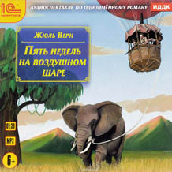 | ||
|
Жюль Верн: «Пять недель на воздушном шаре», «Аудио Театр», «1С» - «ИДДК», 2015г. |
|||
|
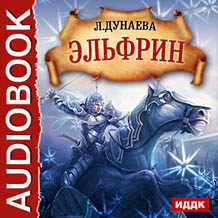 |
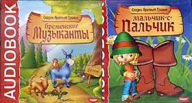 | 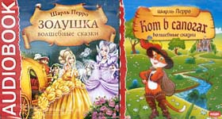 | |
|
Л. Дунаева: |
Братья Гримм: «Сказки», 2 CD «Аудио Театр», «Агентство» - «ИДДК», 2013г. |
Шарль Перро: «Сказки», 2 CD «Аудио Театр», «Агентство» - «ИДДК», 2013г. |
|
|
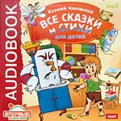 |
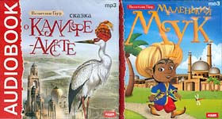 | 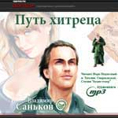 | |
|
Корней Чуковский: |
Вильгельм Гауф: «Сказки», 2 CD «Аудио Театр», «Агентство» - «ИДДК», 2012г. |
Владимир Саньков: «Путь Хитреца» «Аудио Театр», В. Саньков, Digiteca.ru, 2012г. |
|
| 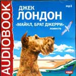 | 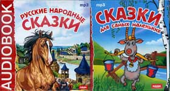 | 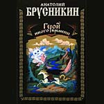 | |
|
Джек Лондон: «Майкл, брат Джерри», «Аудио Театр», «ИДДК», 2008-2012г. |
«Русские народные сказки», 2 CD «Аудио Театр», «Агентство» - «ИДДК», 2012г. |
Анатолий Брусникин: «Герой иного времени», «Аудио Театр», ООО «Аудиокнига», 2011г. |
|
| 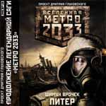 | 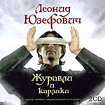 | 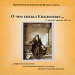 | 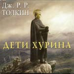 |
|
Шимун Врочек: «Метро `2033», «Аудио Театр», «Равновесие»-«АСТ», 2011г. |
Леонид Юзефович: «Журавли и Карлики», «Аудио Театр», «Равновесие»-«АСТ», 2010г. |
Андрей Гаврилин: «О чём сказал Екклесиаст», «Аудио Театр», ТК «Практика», 2010г. |
Дж. Р. Р. Толкин: «Дети Хурина», «Аудио Театр», ООО «Аудиокнига»-«АСТ», 2009г. |
| 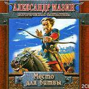 | 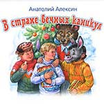 | 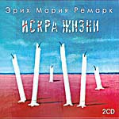 | 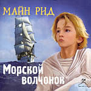 |
|
Александр Мазин: «Место для битвы», «Аудио Театр», «Астрель-СПб», 2009г. |
Анатолий Алексин: «В Стране Вечных Каникул», «Аудио Театр», «Астрель», 2009г. |
Эрих Мария Ремарк: «Искра Жизни», «Аудио Театр», ООО «Аудиокнига», 2009г. |
Майн Рид: «Морской Волчонок», «Аудио Театр», ООО «Эксмо-CDcom», 2009г. |
| 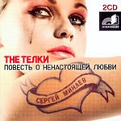 | 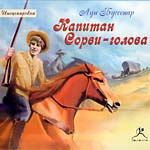 | 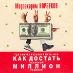 | 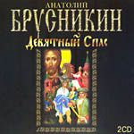 |
|
Сергей Минаев: «The Тёлки», «Аудио Театр», ООО «Аудиокнига», 2008г. |
Луи Буссенар: «Капитан Сорвиголова», «Аудио Театр», ООО «Эксмо-CDcom», 2008г. |
Мирзакарим Норбеков: «Как достать халявный миллион решений», «Аудио Театр», ООО «Аудиокнига», 2008г. |
Анатолий Брусникин: «Девятный Спас», «Аудио Театр», ООО «Аудиокнига», 2008г. |
| 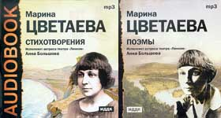 | 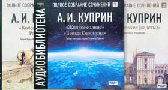 | ||
|
Марина Цветаева: «Стихотворения, поэмы», 2 CD «Аудио Театр», «ИДДК», 2008г. |
Александр Куприн: «Повести, рассказы», 3 CD «Аудио Театр», «ИДДК», 2008г. |
||
| 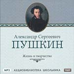 | 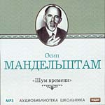 | 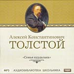 | 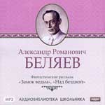 |
|
Марина Цветаева: «Мой Пушкин» «Аудио Театр», «ИДДК», 2008г. |
Осип Мандельштам: «Шум Времени» «Аудио Театр», «ИДДК», 2008г. |
Алексей К. Толстой: «Семья Вурдалака» «Аудио Театр», «ИДДК», 2008г. |
Александр Куприн: «Замок ведьм. Над бездной» «Аудио Театр», «ИДДК», 2008г. |
| 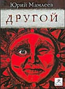 | 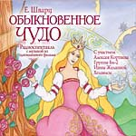 | 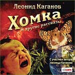 | 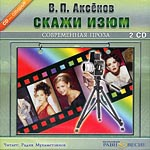 |
|
Юрий Мамлеев: «Другой», «Аудио Театр», «CDcom», 2008г. |
Евгений Шварц: «Обыкновенное Чудо», «Аудио Театр», «CDcom», 2007г. |
Леонид Каганов: «"Хомка" и другие рассказы», «Аудио Театр», «CDcom», 2007г. |
Василий Аксенов: «Скажи Изюм», «Аудио Театр», «Равновесие», 2007г. |
| 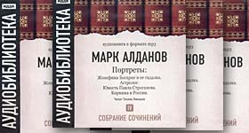 | 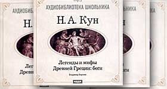 | ||
|
Марк Алданов: «Исторические портреты», 7 CD «Аудио Театр», «ИДДК», 2007г. |
Н. А. Кун: «Легенды и мифы Древней Греции», 5 CD «Аудио Театр», «ИДДК», 2007г. |
||
| 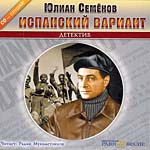 | 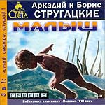 | 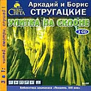 | 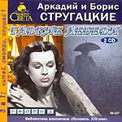 |
|
Юлиан Семенов: «Испанский Вариант», «Аудио Театр», ИД «Равновесие», 2007г. |
Аркадий и Борис Стругацкие: «Малыш», «Аудио Театр», ИД «Равновесие», 2005г. |
Аркадий и Борис Стругацкие: «Улитка На Склоне», «Аудио Театр», ИД «Равновесие», 2006г. |
Аркадий и Борис Стругацкие: «Гадкие Лебеди», «Аудио Театр», ИД «Равновесие», 2006г. |
| 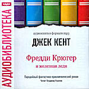 | 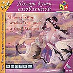 | 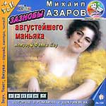 | 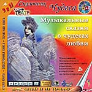 |
|
Джек Кент: «Фредди Крюгер и Железная Леди», «Аудио Театр», «ИДДК», 2006г. |
«Полет Души Влюбленной», «Аудио Театр», РАО «Говорящая Книга», ИД «Равновесие», 2006г. |
Михаил Азаров: «Зазнобы Августейшего Маньяка», «Аудио Театр», РАО «Говорящая Книга», ИД «Равновесие», 2005г. |
Борис Еликов: «Музыкальные Сказки О Чудесах Любви», «Аудио Театр», РАО «Говорящая Книга», ИД «Равновесие», 2005г. |
| 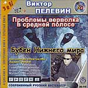 | 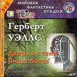 | 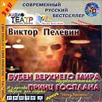 | 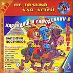 |
|
Виктор Пелевин: «Проблема Верволка в Средней Полосе», «Бубен Нижнего Мира», «Аудио Театр», РАО «Говорящая Книга», ИД «Равновесие», 2005г. |
Герберт Уэллс: «Дверь в Стене», «Аудио Театр», РАО «Говорящая Книга», ИД «Равновесие», 2004г. |
Виктор Пелевин: «Бубен Верхнего Мира», «Аудио Театр», РАО «Говорящая Книга», ИД «Равновесие», 2004г. |
Валентин Постников: «Карандаш и Самоделкин в Египте», «Аудио Театр», РАО «Говорящая Книга», ИД «Равновесие», 2004г. |
| 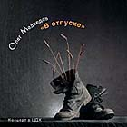 | 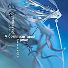 | ||
|
Олег Медведев: «В отпуске»,
2005г.; «У Бриллиантовой Реки», 2006г. Монтаж и мастеринг «Аудио Театр» |
|||